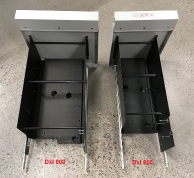

DxI Fluidics: Removing Empty Drawer and Liquid Waste Drawer
Purpose
This procedure describes how to remove the Empty Drawer and the Liquid Waste Drawer from the DxI instrument.
When to perform
Perform this procedure when installing or replacing the Liquid Waste Drawer.
Location
The Empty Drawer or Liquid Waste Drawer is located in the pullout drawer in the lower left front corner of the DxI instrument.
Removing Empty Drawer
Caution: Use proper PPE when removing the drawer. Handle the drawer with care not to damage the drawer slide rails and door cover.

Important: If removing empty drawer, the instrument is defaulted to use an external drain kit. If a waste drawer is being installed, the UI will need to be configure to enable the waste containers. Select
Configure > System Setup > Supplies Setup and check the box
Use Internal Containers to enable the waste containers.
Caution: Use proper PPE when removing the drawer. Handle the drawer with care not to damage the drawer slide rails and door cover.
- Open the upper-right front cover.
- Remove the power from the motors by turning off the switch on the Power Distribution PCB labeled "All DC power (except CPU and reagent coolers)."
- Gently pull the drawer out.
- Remove the Chain attached to the left side drawer.
- Remove the Ground Strap attached to the left side drawer.
Note: Screws for the Chain, screw and star-washer for the Ground Strap will be reused, do not lose them.
- Depress the levers on drawer slides and gently pull the drawer out from the instrument.
Note: Left side clip: lift up to free the left slide. Right side clip: push down to free the right slide.
- Remove the slide rails from both sides of the drawer.
Note: The rails and screws will be reused on the new Liquid Waste drawer.
- Remove the drawer door cover.
Note: The door cover and screws will be reused on the new Liquid Waste Drawer.
Removing the Liquid Waste Drawer
Caution: Use proper PPE when removing the drawer. Handle the drawer with care not to damage the drawer slide rails and door cover.

-
Clamp the Liquid Waste output tubing and remove the tubing from the Selector Valves input connector.
 Note: The output tubing will be reused, do not damage the tubing.
Note: The output tubing will be reused, do not damage the tubing. -
Remove the Bulk Fluid Tray Interface PCB cover and disconnect the serial cable from J1 connection on the PCB.
 Note: The serial cable will be reused, be careful not to bend the connection pins and screws.
Note: The serial cable will be reused, be careful not to bend the connection pins and screws.